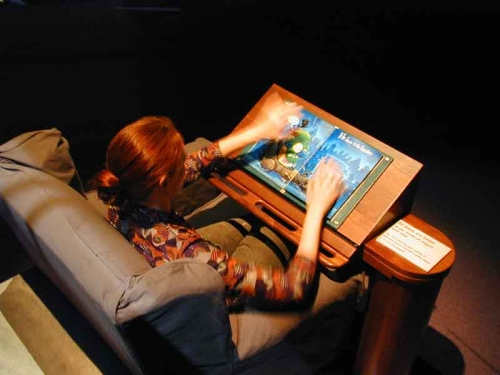
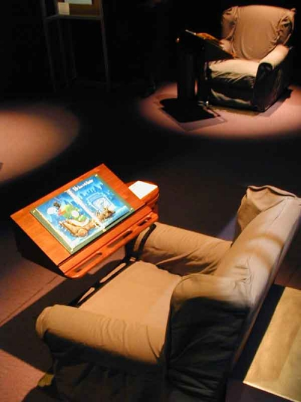

|
|  |
TITLE: Listen, Reader: An Experiment in the Future of
Reading
MATERIALS: Children's book, hardwood reading stand, armchair,
audio, RFID and
capacitive sensing electronics, computer
DIMENSIONS: 3.5' x 4' x 10 '
DATE: 2001
DESCRIPTION
Reading occupies center stage in our technological society.
It is more ubiquitous and more necessary than computers, electricity,
or the automobile. It is far older, and has become interwoven
with every aspect of our daily lives. Reading is intrinsic to
the ways we share knowledge, the ways we entertain ourselves,
and how we manage our social, political, economic, and educational
systems. Reading continually changes; it adapts to whatever
technological or social changes come along. When the practice
of reading changes, over time or across cultures, people's ideas
about reading and writing also shift.
The Listen Reader is designed to explore one possible intersection
of technology with reading. The Listen Reader is a personal
interactive reading experience that combines the look and feel
of a real book - a beautiful cover, paper pages and printed
images and text - with the rich, evocative quality of a movie
soundtrack. It is designed to preserve and even heighten the
experience of immersive reading. It explores the idea of multi-modal
reading: the use of music and sound (but not spoken word) to
provide a sense of place, and to add emotional affect to the
experience of reading a book without interrupting the flow of
the story.
The Listen Reader preserves the beauty of the book as token
object. The design uses no LCD or pixeled screen, but traditional,
richly colored printed pages and a classic immersive reading
environment: a comfortable chair, a polished hardwood swing-arm
reading stand, a pool of light in an otherwise shadowed corner.
The soundtrack is controlled by the motion of the reader's hands
in the air above the page. The natural gestures of the reader
turning the pages can provide a simple soundtrack; more complex,
deliberate gesturing allows the reader to create richer soundscapes.
|
|  |
|
BIO
Maribeth Back is a researcher and designer who builds and
writes about real-world, socially informed exploratory applications
for new technologies. She is especially interested in multi-sensory
systems integrating sonic and haptic elements in wireless, networked
tools and environments. Recent projects include prototyping new
types of reading devices as well as designing innovative interfaces
for wireless systems in everyday activity. Her background includes
theory and audio system design for virtual and computational environments
as well as sound design and engineering for music, live theatre,
radio, museums and CD-ROM. She has created prototypes of experimental
instruments; informatics for advanced medical research systems;
and public interactive installations, both solo and collaborative.
She has also built a number of innovative electronic reading devices,
exploring the intersections between digital systems and the reading
and writing of text. Back completed her doctorate at Harvard's
Graduate School of Design in May 1996. As a Senior Research Scientist
at Xerox PARC (1996 - 2002) she worked with the RED group exploring
emerging technologies.
The Listen Reader was designed and built as part of a larger museum
exhibit called "XFR: Experiments in the Future of Reading."
My thanks to colleagues Jonathan Cohen Steve Harrison, and Rich
Gold who contributed in the building of the Listen Reader system.
The XFR show was exhibited in San Jose's Tech Museum of Innovation
in 2000 and is now touring to science and technology museums in
the U.S.
CONTACT
Maribeth Back
San Francisco, CA
http://xenia.media.mit.edu/~mbb/
Academic paper available at: http://xenia.media.mit.edu/~mbb/papers/listen2001.pdf
|
|